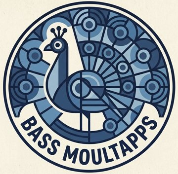

Each day there's a Venn diagram. The overlap shows what links the circles. Work out what goes in each circle. The number above each blank is your clue.
Pacific is the biggest ocean, so it's found. The 4th biggest is still to guess.
Each turn, guess an answer for every circle still blank. You have 5 turns. Found answers stay in place.
Reverse days (once a week): the answers are filled in and you guess the connection.
Mega days (now and then): three circles and more to find.
A new puzzle appears every day. Your streak is saved on this device.

On The Venns is made by Bass Moultapps.
Your stats live in this browser only. Copy the code below and paste it into the game on another device or browser.
Play any you missed, or try one again. Just for fun: they don't count towards your stats or streak.